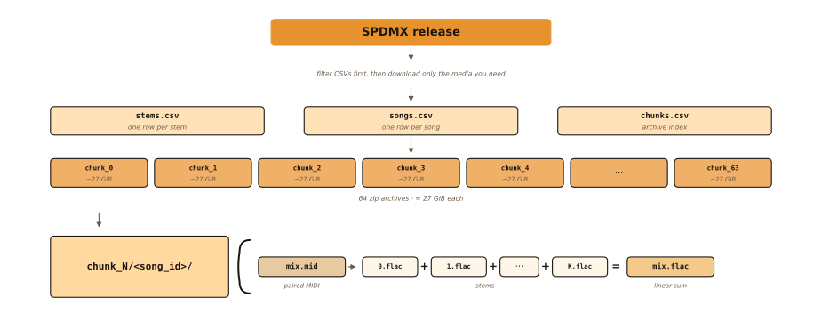

Layout
The corpus is two Mozilla Data Collective archives. Download both, then filter with the CSV tables. Each song directory holds stems, an optional linear-sum mix, and paired MIDI.

chunk_N/<song_id>/ for stems, mix, and paired MIDI.
How to use it
- Download both parts and extract into one directory (see Download).
- Filter songs (e.g.
subset:bdgporn_tracks >= 2) then restrict stems. - Optionally run
./link_single_track_mixes.shso single-trackmix.flacresolves. - Join to PDMX on
song_idwhen you need symbolic metadata beyond the shipped MIDI.
Per-song contents
- track — contiguous index after dropping empty PDMX tracks (
{track}.flac). - program / is_drum — General MIDI identity after name-based correction.
- mix.flac — raw linear sum of stems (mono); single-track songs may need a symlink.
- mix.mid — paired MIDI aligned to the stems.
Songs per chunk
Layout chunks shard local work; MDC hosts them as two even/odd part archives.
Dataset at a glance
Interactive plots mirroring the paper figures. Song-hours count mix duration once per song.
Song hours by stems per song
SPDMX vs Slakh2100 (log y). For each stem count, y is total mix hours of those songs.
Scale vs peers
On mix duration, SPDMX is about an order of magnitude beyond Slakh2100.
Stems per GM program
Top programs by stem count after GM register correction.
Hours per GM program
Same ranking; hours are non-silent (RMS-active) stem time when available.
GM classes (songs)
Piano covers most of the catalog; ensemble and orchestral families form a smaller second tier.